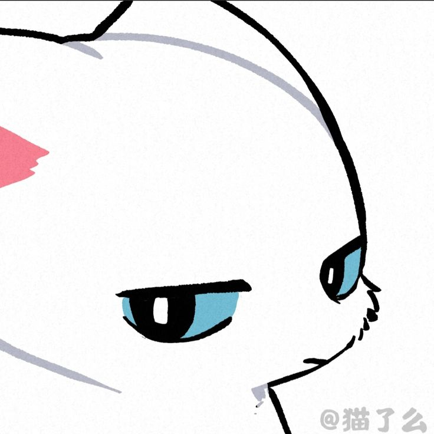

YOUR LITTLE CORNER OF THE DAY
Hi, friend
A fresh page is a good place to begin.
Your first passage is waiting to be written.
YOUR LITTLE CORNER OF THE DAY
A fresh page is a good place to begin.

Your first passage is waiting to be written.